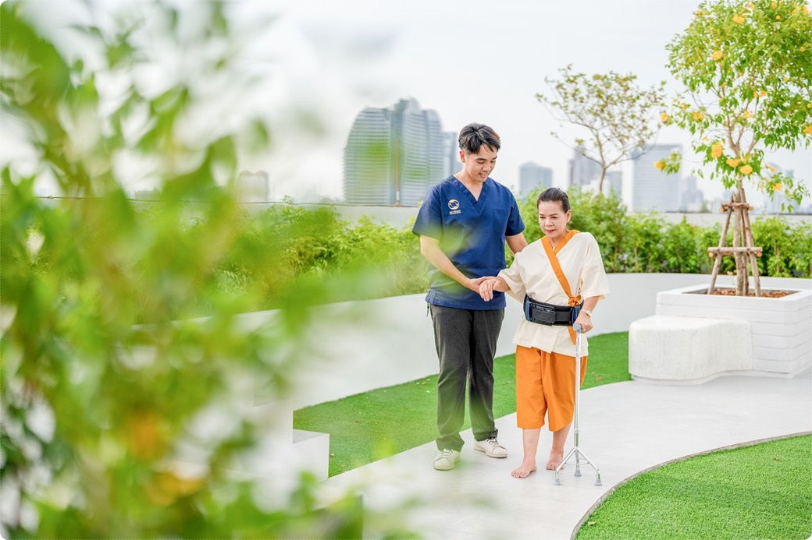
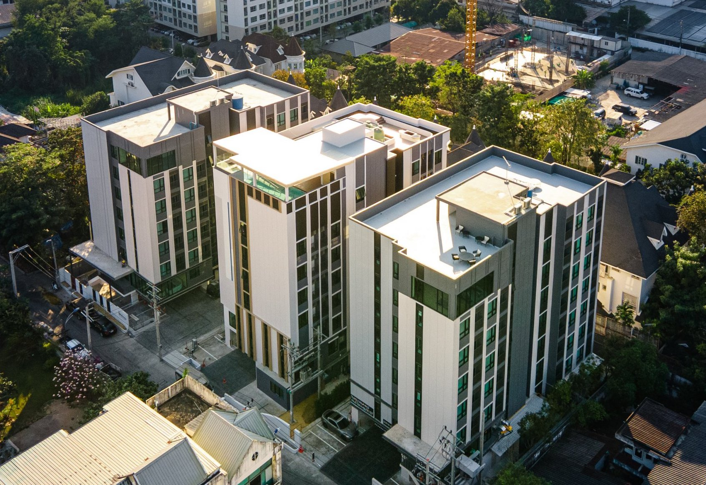
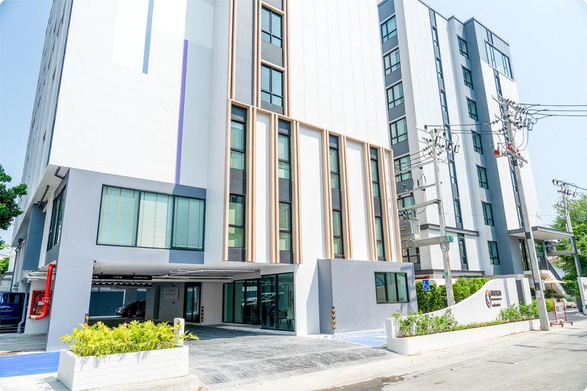
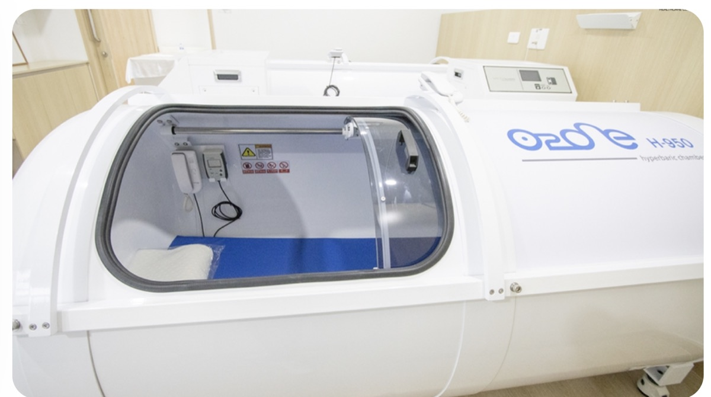
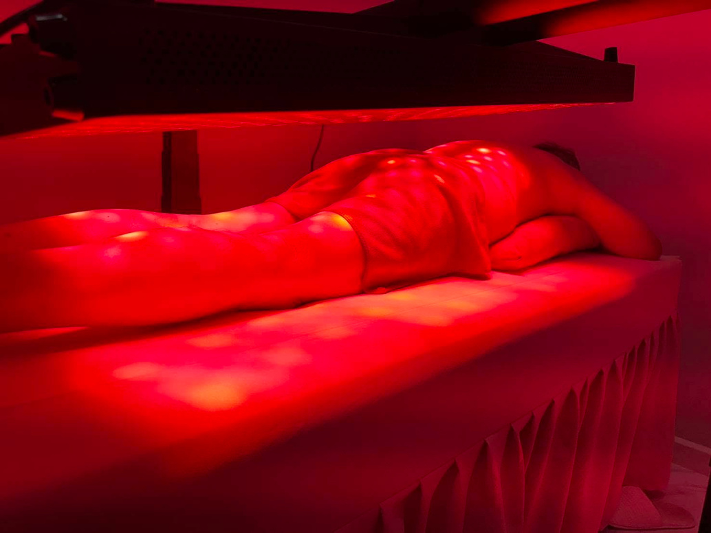

393,729
People were waiting for an MRI in England in July 2026.
Medical tourism · Thailand
If you are already in Thailand, there is a different way to spend five days: understand more about your health, experience a medical and wellness environment, and still have time to enjoy Thailand with a partner.
Five-day preventative health & wellness programme · Bangkok + Pattaya · tailored to your needs

Maybe this is why you stopped
Or your gastroscopy. Or the blood tests you wanted to do properly. Or the hormone work-up you keep meaning to arrange.
For many people in their fifties and sixties, the frustration is not that healthcare does not exist. It is that the answer is always somewhere in the future: a referral, an appointment, another appointment, another result, another letter.
And then there is private care. It can be faster — but it can also feel very expensive for something that does not necessarily feel luxurious. You can spend more than a thousand pounds on a comprehensive private health assessment and still spend the rest of the month arranging the next thing yourself. Bupa's current Be.Ahead assessment, for example, is £1,199 for a three-hour assessment with a GP, blood tests, ECG, fitness testing and targeted cancer screening.
| Diagnostic example — England | People waiting | Already waiting 6+ weeks | Median wait |
|---|---|---|---|
| MRI scan | 393,729 | 21.4% | |
| Gastroscopy | 76,455 | 29.0% | |
| DEXA scan | 70,075 | 19.4% | |
| All 15 diagnostic categories | 1,921,259 | 23.1% | — |
NHS England diagnostic waiting-time data for July 2026. The national operational standard is that fewer than 1% of patients should wait 6 weeks or more for a diagnostic test. These figures are for England and describe people already waiting; they do not predict the wait for an individual patient.
People were waiting for an MRI in England in July 2026.
Of people waiting for a gastroscopy had already waited six weeks or more.
Across 15 key diagnostic categories, almost one in four had already waited six weeks or more.
The question is not whether Britain has excellent medicine. It does. The question is whether you want to keep putting your own health at the end of the diary.
The new Thailand
Thailand is deliberately moving tourism towards health, wellness, meaning and longer-term wellbeing — not simply beaches, hotels and sightseeing.
In 2026, the Tourism Authority of Thailand is promoting the global Healing is the New Luxury direction, positioning wellness as a defining part of meaningful travel. Its “Healing Journey Thailand” campaign was officially launched in January 2026, with a focus on high-value, wellness-led and purpose-driven travel.
Wellness is the new tourism. Healing is the new luxury.
That is the context in which this programme sits: not a conventional holiday with a massage added, and not a hospital stay disguised as tourism.
The place matters
A specialist rehabilitation and wellness environment in Bangkok, with clinical staff, diagnostics and advanced therapy equipment under one roof.



KIN's published material describes a professional healthcare environment with rehabilitation medicine, physiotherapy, nursing, diagnostics and advanced clinical technologies. The organisation is licensed by Thailand's Ministry of Public Health and has received recognised healthcare and design awards.


The point is not to sell you every machine. It is to give you access to a real healthcare environment — and then build the right programme around you.
What the programme is built around
The core of the programme is a Comprehensive Executive Health Assessment. Additional diagnostics can be added when they are appropriate for you and confirmed by the medical team.
The executive assessment is the core offer for this marketing version. Colonoscopy and spinal MRI are optional pathways, subject to medical indication, availability and confirmation by KIN or an approved clinical partner.
Day by day
A five-day programme combining baseline diagnostics and selected wellness therapies in Bangkok with time for sightseeing in Pattaya. The itinerary below reflects the activities listed for this package; optional items are identified as such.


The programme lists PMST therapy or an IV vitamin drip as alternatives; it does not state that both are included.

The source itinerary does not specify the exact sightseeing stops or the transport type for the Bangkok–Pattaya transfer.

The aesthetic-centre visit is marked optional in the programme. The source document does not specify its price or whether any procedure is included.

Accommodation, most meals, international flights, cancellation terms and the price basis (per person or otherwise) are not specified in the source itinerary. Please request written confirmation of these details before booking.
Why this can make sense
If you are spending weeks in Thailand, five of those days can include something more meaningful than another pool and another restaurant.
The programme is designed to work for leisure travellers and companions who want to combine health-focused appointments with experiencing Thailand.
Before anything is confirmed, tell us your age, goals, current situation and what you have been waiting for. The next step is a free video consultation.
Questions worth asking
It is presented as a preventative and restorative health and wellness programme. It is not a substitute for your GP or consultant and is not a promise to diagnose or treat a specific condition. A doctor must determine whether an individual is suitable.
Comprehensive Executive Health Assessment is the core of the programme. Colonoscopy and spinal MRI are optional and only considered where clinically appropriate. Availability, pathway and pricing are confirmed individually.
Tell us on the enquiry form. The programme source specifically identifies leisure travellers and companions as a target profile. Any clinical services for a companion would need to be quoted separately unless confirmed otherwise.
Your details are captured first and your phone number is passed to our contact system. You are then taken to a thank-you page where you can choose a free video consultation time through our calendar. Our team may also contact you automatically by phone.
No. The booking calendar is deliberately placed after the lead form. The first step is to tell us who you are and what you are looking for. The second step is optional: choose a video consultation time.